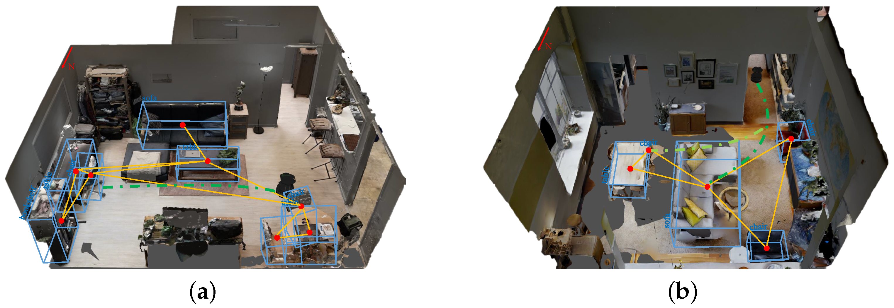

Markov localisation and Kalman filter localisation have been two extremely popular strat- egies for research AMRAutonomous Mobile RoboticsAutonomous Mobile Robotics systems navigating indoor environments. They have strong formal bases and therefore well-defined behavior. But there are a large number of other lo- calisation techniques that have been used with varying degrees of success on commercial and research AMRAutonomous Mobile RoboticsAutonomous Mobile Robotics platforms. We will not explore the space of all localisation sys- tems in detail. Refer to surveys such as [4] for such information. There are, however, several categories of localisation techniques that deserve mention. Not surprisingly, many implementations of these techniques in commercial robotics employ modifications of the robot’s environment, something that the Markov localisation and Kal- man filter localisation communities eschew. In the following sections, we briefly identify the general strategy incorporated by each category and reference example systems, includ- ing as appropriate those that modify the environment and those that function without envi- ronmental modification.
Landmarks are generally defined as
-
When a landmark is in view, the robot localizes frequently and accurately, using action update and perception update to
track its position without cumulative error . -
when the robot is in no landmark “zone”, then only action update occurs, and the robot accumulates position uncertainty until the next landmark enters the robot’s field of view.
The robot is thus effectively dead-reckoning from landmark zone to landmark zone. This in turn means the robot must consult its map carefully, ensuring that each motion between landmarks is sufficiently short, given its motion model, that it will be able to localize successful upon reaching the next landmark.

Fig. 3.15 shows one instantiating of landmark-based localisation. The particular shape of the landmarks enables reliable and accurate pose estimation by the robot, which must travel using dead reckoning between the landmarks.
One key advantage of the landmark-based navigation approach is that a strong formal theory has been developed for this general system architecture [113]. In this work, the authors have shown precise assumptions and conditions which, when satisfied, guarantee that the robot will always be able to localize successfully. This work also led to a real-world demonstration of landmark-based localisation. Standard sheets of paper were placed on the ceiling of the Robotics Laboratory at Stanford University, each with a unique checkerboard pattern. A Nomadics 200 AMRAutonomous Mobile RoboticsAutonomous Mobile Robotics was fitted with a monochrome CCDCharge Coupled DeviceCharge Coupled Device camera aimed vertically up at the ceiling. By recognizing the paper landmarks, which were placed approximately 2 meters apart, the robot was able to localize to within several centimeters, then move using dead-reckoning to another landmark zone.
The primary disadvantage of landmark-based navigation is that in general
The landmark-based navigation approach makes a strong general assumption:
when the landmark is in the robot’s field of view, localisation is essentially perfect.
One way to reach the near perfect AMRAutonomous Mobile RoboticsAutonomous Mobile Robotics localisation is to effectively enable such an assumption to be valid wherever the robot is located. It would be revolutionary the robot’s sensors immediately identified its particular location, uniquely, and repeatedly.
Such a strategy for localisation is surely aggressive, but the question of whether it can be done is primarily a question of sensor technology software. Clearly, such a localisation system would need to use a sensor which collects a very large amount of information.
Since vision does indeed collect far more information than other sensors, it has been used as the sensor of choice in research towards globally unique localisation.
If humans were able to look at an individual picture and identify the robot’s location in a well-known environment, then one could argue that the information for globally unique localisation does exist within the picture. It must simply be interpreted correctly.
One such approach has been attempted by several researchers and involves constructing one or more image histograms to represent the information content of an image stably (see for example Figure 4.51 and Section 4.3.2.2). A robot using such an image histogramming system has been shown to uniquely identify individual rooms in an office building as well as individual sidewalks in an outdoor environment. However, such a system is highly sensitive to external illumination and provides only a level of localisation resolution equal to the visual footprint of the camera optics.
The Angular histogram depicted in Figure 5.37 is another example in which the robot’s sensor values are transformed into an identifier of location. However, due to the limited information content of sonar ranging strikes, it is likely that two places in the robot’s environment may have angular histograms that are too similar to be differentiated successfully.
One way of attempting to gather sufficient sonar information for global localisation is to allow the robot time to gather a large amount of sonar data into a local evidence grid (i.e. occupancy grid) first, then match the local evidence grid with a global metric map of the environment. In [115] the researchers demonstrate such a system as able to localize on-thefly even as significant changes are made to the environment, degrading the fidelity of the map. Most interesting is that the local evidence grid represents information well enough that it can be used to correct and update the map over time, thereby leading to a localisation system that provides corrective feedback to the environment representation directly. This is similar in spirit to the idea of taking rejected observed features in the Kalman filter localisation algorithm and using them to create new features in the map.
A most promising, new method for globally unique localisation is called Mosaic-based localisation [114]. This fascinating approach takes advantage of an environmental feature that is rarely used by AMRAutonomous Mobile RoboticsAutonomous Mobile Roboticss: fine-grained floor texture. This method succeeds primarily because of the recent ubiquity of very fast processors, very fast cameras and very large storage media.
The robot is fitted with a high-quality high-speed CCDCharge Coupled DeviceCharge Coupled Device camera pointed toward the floor, ideally situated between the robot’s wheels and illuminated by a specialized light pattern off the camera axis to enhance floor texture. The robot begins by collecting images of the entire floor in the robot’s workspace using this camera. Of course the memory requirements are significant, requiring a 10GB drive in order to store the complete image library of a 300 x 300 meter area. Once the complete image mosaic is stored, the robot can travel any trajectory on the floor while tracking its own position without difficulty. Localisation is performed by simply re cording one image, performing action update, then performing perception update by matching the image to the mosaic database using simple techniques based on image database matching. The resulting performance has been impressive: such a robot has been shown to localize repeatedly with 1mm precision while moving at 25 km/hr. The key advantage of globally unique localisation is that, when these systems function correctly, they greatly simplify robot navigation. The robot can move to any point and will always be assured of localizing by collecting a sensor scan. But the main disadvantage of globally unique localisation is that it is likely that this method will never offer a complete solution to the localisation problem. There will always be cases where local sensory information is truly ambiguous and, therefore, globally unique localisa- tion using only current sensor information is unlikely to succeed. Humans often have excel- lent local positioning systems, particularly in non-repeating and well-known environments such as their homes. However, there are a number of environments in which such immediate localisation is challenging even for humans: consider hedge mazes and large new office buildings with repeating halls that are identical. Indeed, the mosaic-based localisation pro- totype described above encountered such a problem in its first implementation. The floor of the factory floor had been freshly painted and was thus devoid of sufficient micro-fractures to generate texture for correlation. Their solution was to modify the environment after all, painting random texture onto the factory floor.
With most beacon systems, the design depicted depends foremost upon geometric principles to effect localisation. In this case the robots must know the positions of the two pinger units in the global coordinate frame in order to localize themselves to the global coordinate frame. A popular type of beacon system in industrial robotic applications is depicted in Figure 5.39. In this case beacons are retroreflective markers that can be easily detected by a AMRAutonomous Mobile RoboticsAutonomous Mobile Robotics based on their reflection of energy back to the robot. Given known positions for the optical retroreflectors, a AMRAutonomous Mobile RoboticsAutonomous Mobile Robotics can identify its position whenever it has three such beacons in sight simultaneously. Of course, a robot with encoders can localize over time as well, and does not need to measure its angle to all three beacons at the same instant. The advantage of such beacon-based systems is usually extremely high engineered reliabil- ity. By the same token, significant engineering usually surrounds the installation of such a system in a specific commercial setting. Therefore, moving the robot to a different factory floor will be both time-consuming and expensive. Usually, even changing the routes used by the robot will require serious re-engineering.
Even more reliable than beacon-based systems are route-based localisation strategies. In this
case, the route of the robot is explicitly marked so that it can determine its position, not
relative to some global coordinate frame, but relative to the specific path it is allowed to
travel. A perfect example for these kind of localisation is the traditional line following
robot. The robot does not need to know where it is as its only job is to make sure the line
it is following is within its vision [†]AaaravG. How to Make Line Follower Robot Using
Arduino 2018. There are many techniques for marking such a route and the subsequent
intersections.
A perfect example for these kind of localisation is the traditional line following
robot. The robot does not need to know where it is as its only job is to make sure the line
it is following is within its vision [†]AaaravG. How to Make Line Follower Robot Using
Arduino 2018. There are many techniques for marking such a route and the subsequent
intersections.
In all cases, one is effectively creating a railway system, except the railway system is somewhat more flexible and certainly more human-friendly actual rail.
For example, high UV-reflective, optically transparent paint can mark the route such that only the robot, using a specialized sensor, easily detects it. Alternatively, a guide wire buried underneath the hall can be detected using inductive coils located on the robot chassis.
In all such cases, the robot localisation problem is effectively trivialized by forcing the robot to always
follow a prescribed path. While this may remove the
the robot is much more inflexible give such localisation means, and therefore any change to the robot’s behavior requires significant engineering and time.